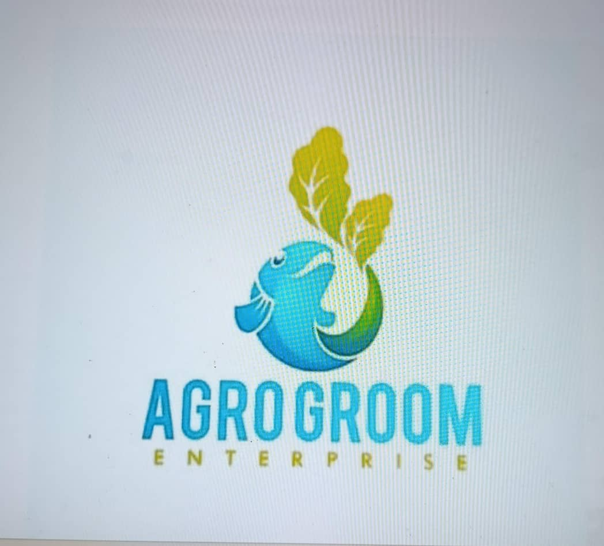

Trusted Business
“A reliable business systems partner for digital structure, workflow clarity, and professional service delivery.”

Agrogroom Foods Limited
Food, agriculture, and business operations
100% Rating
5 Perfect Stars
Trusted Partner